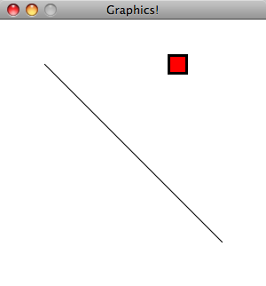

In the last assignment you learned how to create your own simple objects. One of the advantages of building software using objects is that it makes it relatively easy to use software components that other people have built. In this assignment, you will use the Java's built-in graphics and containers, combined with a simple framework that we provide.
BouncingBox class to your window, moving in different directions. Use an ArrayList to hold them.SimpleDraw, BouncingBox, and DrawGraphics. Copy and paste the code for these classes from below.SimpleDraw and run that, as it contains the main method for the program. You should see a window that looks like the following:

Open the DrawGraphics class. The draw method is what draws the contents of the window. Currently, there is a line and a square with a border around it. Feel free to remove these, if you want. Add at least three different shapes to the window. Read the API documentation for the java.awt.Graphics class to find what methods are provided. You can draw rectangles, arcs, lines, text, ovals, polygons, and, if you want to do some extra work, images. Be creative!
Note: You should only modify the DrawGraphics class for this step. The other classes contain a bunch of code required to create a window in Java that you do not need to change or understand.
The DrawGraphics class supports animation. The draw method gets called 20 times a second, in order to draw each individual frame. The BouncingBox class also includes animation support. To get the box to move, call setMovementVector method from the DrawGraphics constructor, providing an x and y offset. For example, the value (1, 0) moves the box to the right slowly, while (0, -2) will move it up faster. You only need to call this method once to keep it moving in that direction. In other words, don't call setMovementVector from the draw method, call it from the constructor.
Add at least three boxes to your window, moving in different directions. To do this, put three BouncingBox instances in an ArrayList, as part of the DrawGraphics constructor. Then, call the draw method on each of the boxes from DrawGraphics.draw, using a loop.
Optional: If you want to experiment, create your own animated object. Copy BouncingBox as a starting point, then edit the code in its draw method. You could create something with more complicated movement, and/or something that looks better than what I created in five minutes.
Submit your DrawGraphics.java file via Stellar.
import java.awt.Color;
import java.awt.Dimension;
import java.awt.Graphics;
import java.awt.Graphics2D;
import java.awt.RenderingHints;
import java.awt.event.WindowAdapter;
import java.awt.event.WindowEvent;
import javax.swing.JFrame;
import javax.swing.JPanel;
/** Displays a window and delegates drawing to DrawGraphics. */
public class SimpleDraw extends JPanel implements Runnable {
private static final long serialVersionUID = -7469734580960165754L;
private boolean animate = true;
private final int FRAME_DELAY = 50; // 50 ms = 20 FPS
public static final int WIDTH = 300;
public static final int HEIGHT = 300;
private DrawGraphics draw;
public SimpleDraw(DrawGraphics drawer) {
this.draw = drawer;
}
/** Paint callback from Swing. Draw graphics using g. */
public void paintComponent(Graphics g) {
super.paintComponent(g);
// Enable anti-aliasing for better looking graphics
Graphics2D g2 = (Graphics2D) g;
g2.setRenderingHint(RenderingHints.KEY_ANTIALIASING, RenderingHints.VALUE_ANTIALIAS_ON);
draw.draw(g2);
}
/** Enables periodic repaint calls. */
public synchronized void start() {
animate = true;
}
/** Pauses animation. */
public synchronized void stop() {
animate = false;
}
private synchronized boolean animationEnabled() {
return animate;
}
public void run() {
while (true) {
if (animationEnabled()) {
repaint();
}
try {
Thread.sleep(FRAME_DELAY);
} catch (InterruptedException e) {
throw new RuntimeException(e);
}
}
}
public static void main(String args[]) {
final SimpleDraw content = new SimpleDraw(new DrawGraphics());
JFrame frame = new JFrame("Graphics!");
Color bgColor = Color.white;
frame.setBackground(bgColor);
content.setBackground(bgColor);
// content.setSize(WIDTH, HEIGHT);
// content.setMinimumSize(new Dimension(WIDTH, HEIGHT));
content.setPreferredSize(new Dimension(WIDTH, HEIGHT));
// frame.setSize(WIDTH, HEIGHT);
frame.setContentPane(content);
frame.setResizable(false);
frame.pack();
frame.addWindowListener(new WindowAdapter() {
public void windowClosing(WindowEvent e) { System.exit(0); }
public void windowDeiconified(WindowEvent e) { content.start(); }
public void windowIconified(WindowEvent e) { content.stop(); }
});
new Thread(content).start();
frame.setVisible(true);
}
}
import java.awt.BasicStroke;
import java.awt.Color;
import java.awt.Graphics;
import java.awt.Graphics2D;
public class BouncingBox {
int x;
int y;
Color color;
int xDirection = 0;
int yDirection = 0;
final int SIZE = 20;
/**
* Initialize a new box with its center located at (startX, startY), filled
* with startColor.
*/
public BouncingBox(int startX, int startY, Color startColor) {
x = startX;
y = startY;
color = startColor;
}
/** Draws the box at its current position on to surface. */
public void draw(Graphics surface) {
// Draw the object
surface.setColor(color);
surface.fillRect(x - SIZE/2, y - SIZE/2, SIZE, SIZE);
surface.setColor(Color.BLACK);
((Graphics2D) surface).setStroke(new BasicStroke(3.0f));
surface.drawRect(x - SIZE/2, y - SIZE/2, SIZE, SIZE);
// Move the center of the object each time we draw it
x += xDirection;
y += yDirection;
// If we have hit the edge and are moving in the wrong direction, reverse direction
// We check the direction because if a box is placed near the wall, we would get "stuck"
// rather than moving in the right direction
if ((x - SIZE/2 <= 0 && xDirection < 0) ||
(x + SIZE/2 >= SimpleDraw.WIDTH && xDirection > 0)) {
xDirection = -xDirection;
}
if ((y - SIZE/2 <= 0 && yDirection < 0) ||
(y + SIZE/2 >= SimpleDraw.HEIGHT && yDirection > 0)) {
yDirection = -yDirection;
}
}
public void setMovementVector(int xIncrement, int yIncrement) {
xDirection = xIncrement;
yDirection = yIncrement;
}
}
import java.awt.Color;
import java.awt.Graphics;
public class DrawGraphics {
BouncingBox box;
/** Initializes this class for drawing. */
public DrawGraphics() {
box = new BouncingBox(200, 50, Color.RED);
}
/** Draw
the contents of the window on surface. Called 20 times per second. */
public void draw(Graphics surface) {
surface.drawLine(50, 50, 250, 250);
box.draw(surface);
}
}